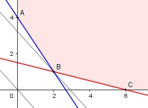

Aufgabe 82 Rindfleisch mit 100 g Fettanteil pro kg kostet 12,40 €/kg. Schweinefleisch mit 400 g Fettanteil pro kg kostet 11,20 €/kg. Welche Mengen Rind- und Schweinefleisch muss man einkaufen, wenn sie mindestens 2 400 g fettfreies und 600 g fettes Fleisch enthalten sollen und der Einkauf am billigsten sein soll. x = kg Rindfleisch y = kg Schweinefleisch Bedingungen: x > 0 x ∈ ℕ y > 0 y ∈ ℕ 0,1x + 0,4y ≥ 0,6 900 g pro kg sind im Rindfleisch fettfrei 600 g pro kg sind im Schweinefleisch fettfrei 0,9x + 0,6y ≥ 2,4 Zielfunktion: K = 12,40x + 11,20y Randgerade 1: 0,9x + 0,6y = 2,4 Randgerade 2: 0,1x + 0,4y = 0,6

Die Eckpunkte A, B und C bilden den Rand des Planungsgebietes, das alle Ungleichungen erfüllt. Eckpunkt A ist der Schnittpunkt der Randgerade 1 mit x = 0 0,9 * 0 + 0,6y = 2,4 |:0,6 y = 4 A(0|4). Eckpunkt B ist der Schnittpunkt der Randgeraden 1 und 2 0,1x + 0,4y = 0,6 |-0,4y 0,1x = 0,6 - 0,4y |:0,1 x = 6 - 4y Eingesetzt: 0,9 * (6 - 4y) + 0,6y = 2,4 5,4 - 3,6y + 0,6y = 2,4 |+3y - 2,4 3y = 3 |:3 y = 1 Eingesetzt: x = 6 - 4 = 2 B(2|1) Eckpunkt C ist der Schnittpunkt der Randgerade 2 mit y = 0 Eingesetzt: 0,1x + 0,4 * 0 = 0,6 0,1x = 0,6 |:0,1 x = 6 C(6|0) Die Parallele der Zielfunktion K liegt in B am tiefsten --> Kmin = 12,40 * 2 + 1 * 11,20 = 36 € Es müssen 2 kg Rind- und 1 kg Schweinefleisch gekauft werden.